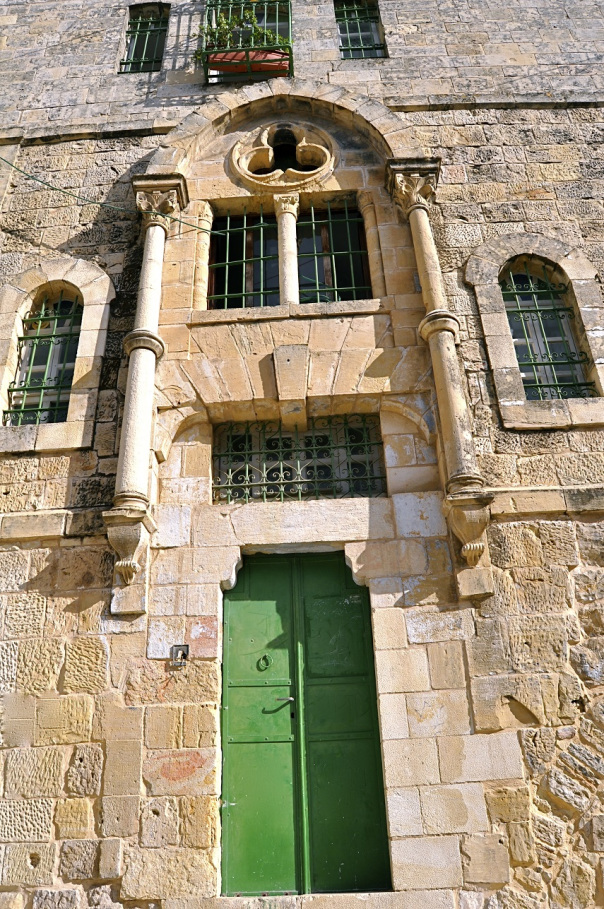

WELCOME TO Hebron

city located in the southern West Bank, 30 km (19 mi) south of Jerusalem. Nestled in the Judaean Mountains, it lies 930 meters (3,050 ft) above sea level.
Location
A beautiful and fertile village, Halhoul lies five kilometers north of Hebron and marks the highest inhabited location in Palestine (1,000 meters above sea level). Abundant vineyards dot the area, producing Hebron’s renowned grapes. The mosque of Nabi Yunis lies just outside the town. According to Muslim tradition, the mosque was built over the grave of the Prophet Jonah.
HALHOUL
A beautiful and fertile village, Halhoul lies five kilometers north of Hebron and marks the highest inhabited location in Palestine (1,000 meters above sea level). Abundant vineyards dot the area, producing Hebron’s renowned grapes. The mosque of Nabi Yunis lies just outside the town. According to Muslim tradition, the mosque was built over the grave of the Prophet Jonah.
The Old Town of Hebron
The old town of Hebron is located in the southeast corner of the modern city of Hebron, with Al-Haram al-Ibrahimi (Ibrahimi Mosque) at its center. During the early Islamic Period, the center of town moved from Tell Rumeideh to the vicinity of Al-Haram al-Ibrahimi. In 1099, it was conquered by the Crusaders, and in 1187, it was liberated by Saladin, who encouraged his army, consisting of Turks, Kurds, Turkmen, Moroccans, and local Arabs, to settle in Hebron/Al-Khalil. The city was separated into quarters along ethnic, religious and professional divisions. The town thrived during the Mamluk period and became an important cultural and religious hub. The urban fabric of the old town was concentrated in the vicinity of Al-Haram al-Ibrahimi, encompassing a diversified social and architectural conglomerate of quarters, alleys, ahwash (sing. hosh) or courtyards, suqs or markets, khans or inns, mosques, schools and zawayas (sing. zawiya).

AL-Haram AL-Ibrahimi/AL-Ibrahimi Mosque
Al-Haram al-Ibrahimi is located at the southeast corner of modern Hebron and in the heart of its old town. It is considered the fourth holiest site in Islam and the second holiest site in Palestine. Historical evidence suggests that the Prophet Ibrahim/Abraham resided in Hebron approximately four thousand years ago. He chose Hebron as a burial place for his wife Sarah, and later for himself, his son Isaac, his grandson Jacob and their wives. According to some sources, it also houses the tomb of Joseph. Al-Ibrahimi Mosque was built within an enclosure originally constructed by Herod the Great, who ruled over Palestine during the early Roman period (37–4 BC). It is built of large drafted ashlars (the largest is 7.5 x 1.4 meters) and is 15 meters high. During the Byzantine period, a church was probably built inside the enclosure and later destroyed during the Persian invasion of Palestine in 614 AD. In the Early Islamic period, a mosque was built inside the enclosure. Under Islamic rule, Al-Ibrahimi Mosque was given special attention, and the cenotaphs of the prophets were constructed and richly decorated with green tapestries embroidered with Qur’anic verses and other pious inscriptions. During this period, Hebron became the fourth holiest city in the Islamic world and a spiritual terminal for pilgrims and tourists worldwide. Successive Arab Muslim rulers, scholars and visitors glorified and sanctified Al-Ibrahimi Mosque in the city of Hebron.